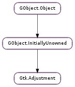

| static | new(value, lower, upper, step_increment, page_increment, page_size) |
| changed() | |
| clamp_page(lower, upper) | |
| configure(value, lower, upper, step_increment, page_increment, page_size) | |
| get_lower() | |
| get_minimum_increment() | |
| get_page_increment() | |
| get_page_size() | |
| get_step_increment() | |
| get_upper() | |
| get_value() | |
| set_lower(lower) | |
| set_page_increment(page_increment) | |
| set_page_size(page_size) | |
| set_step_increment(step_increment) | |
| set_upper(upper) | |
| set_value(value) | |
| value_changed() |
| Name | Type | Flags | Description |
|---|---|---|---|
| lower | float | r/w | The minimum value of the adjustment |
| page-increment | float | r/w | The page increment of the adjustment |
| page-size | float | r/w | The page size of the adjustment |
| step-increment | float | r/w | The step increment of the adjustment |
| upper | float | r/w | The maximum value of the adjustment |
| value | float | r/w | The value of the adjustment |
| Name | Parameters | Return | Description |
|---|---|---|---|
| changed | Emitted when one or more of the Gtk.Adjustment properties have been changed, other than the Gtk.Adjustment :value property. | ||
| value-changed | Emitted when the Gtk.Adjustment :value property has been changed. |
| Name | Type | Access |
|---|---|---|
| parent_instance | GObject.InitiallyUnowned | r |
Bases: GObject.InitiallyUnowned
The Gtk.Adjustment object represents a value which has an associated lower and upper bound, together with step and page increments, and a page size. It is used within several GTK+ widgets, including Gtk.SpinButton, Gtk.Viewport, and Gtk.Range (which is a base class for Gtk.HScrollbar, Gtk.VScrollbar, Gtk.HScale, and Gtk.VScale ).
The Gtk.Adjustment object does not update the value itself. Instead it is left up to the owner of the Gtk.Adjustment to control the value.
The owner of the Gtk.Adjustment typically calls the Gtk.Adjustment.value_changed () and Gtk.Adjustment.changed () functions after changing the value and its bounds. This results in the emission of the Gtk.Adjustment ::value-changed or Gtk.Adjustment ::changed signal respectively.
| Parameters: |
|
|---|---|
| Returns: | a new Gtk.Adjustment. |
| Return type: |
Creates a new Gtk.Adjustment.
Emitted when one or more of the Gtk.Adjustment properties have been changed, other than the Gtk.Adjustment :value property.
| Parameters: |
|
|---|
Updates the Gtk.Adjustment :value property to ensure that the range between lower and upper is in the current page (i.e. between Gtk.Adjustment :value and Gtk.Adjustment :value + Gtk.Adjustment :page-size ). If the range is larger than the page size, then only the start of it will be in the current page. A Gtk.Adjustment ::changed signal will be emitted if the value is changed.
| Parameters: |
|
|---|
Sets all properties of the adjustment at once.
Use this function to avoid multiple emissions of the Gtk.Adjustment ::changed signal. See Gtk.Adjustment.set_lower () for an alternative way of compressing multiple emissions of Gtk.Adjustment ::changed into one.
| Returns: | The current minimum value of the adjustment. |
|---|---|
| Return type: | float |
Retrieves the minimum value of the adjustment.
| Returns: | the minimum increment of adjustment |
|---|---|
| Return type: | float |
Gets the smaller of step increment and page increment.
| Returns: | The current page increment of the adjustment. |
|---|---|
| Return type: | float |
Retrieves the page increment of the adjustment.
| Returns: | The current page size of the adjustment. |
|---|---|
| Return type: | float |
Retrieves the page size of the adjustment.
| Returns: | The current step increment of the adjustment. |
|---|---|
| Return type: | float |
Retrieves the step increment of the adjustment.
| Returns: | The current maximum value of the adjustment. |
|---|---|
| Return type: | float |
Retrieves the maximum value of the adjustment.
| Returns: | The current value of the adjustment. |
|---|---|
| Return type: | float |
Gets the current value of the adjustment. See Gtk.Adjustment.set_value ().
| Parameters: | lower (float) – the new minimum value |
|---|
Sets the minimum value of the adjustment.
When setting multiple adjustment properties via their individual setters, multiple Gtk.Adjustment ::changed signals will be emitted. However, since the emission of the Gtk.Adjustment ::changed signal is tied to the emission of the GObject.Object ::notify signals of the changed properties, it’s possible to compress the Gtk.Adjustment ::changed signals into one by calling GObject.Object.freeze_notify () and GObject.Object.thaw_notify () around the calls to the individual setters.
Alternatively, using a single GObject.Object.set () for all the properties to change, or using Gtk.Adjustment.configure () has the same effect of compressing Gtk.Adjustment ::changed emissions.
| Parameters: | page_increment (float) – the new page increment |
|---|
Sets the page increment of the adjustment.
See Gtk.Adjustment.set_lower () about how to compress multiple emissions of the Gtk.Adjustment ::changed signal when setting multiple adjustment properties.
| Parameters: | page_size (float) – the new page size |
|---|
Sets the page size of the adjustment.
See Gtk.Adjustment.set_lower () about how to compress multiple emissions of the Gtk.Adjustment ::changed signal when setting multiple adjustment properties.
| Parameters: | step_increment (float) – the new step increment |
|---|
Sets the step increment of the adjustment.
See Gtk.Adjustment.set_lower () about how to compress multiple emissions of the Gtk.Adjustment ::changed signal when setting multiple adjustment properties.
| Parameters: | upper (float) – the new maximum value |
|---|
Sets the maximum value of the adjustment.
Note that values will be restricted by upper - page-size if the page-size property is nonzero.
See Gtk.Adjustment.set_lower () about how to compress multiple emissions of the Gtk.Adjustment ::changed signal when setting multiple adjustment properties.
| Parameters: | value (float) – the new value. |
|---|
Sets the Gtk.Adjustment value. The value is clamped to lie between Gtk.Adjustment :lower and Gtk.Adjustment :upper.
Note that for adjustments which are used in a Gtk.Scrollbar, the effective range of allowed values goes from Gtk.Adjustment :lower to Gtk.Adjustment :upper - Gtk.Adjustment :page-size.
Emits a Gtk.Adjustment ::value-changed signal from the Gtk.Adjustment. This is typically called by the owner of the Gtk.Adjustment after it has changed the Gtk.Adjustment :value property.